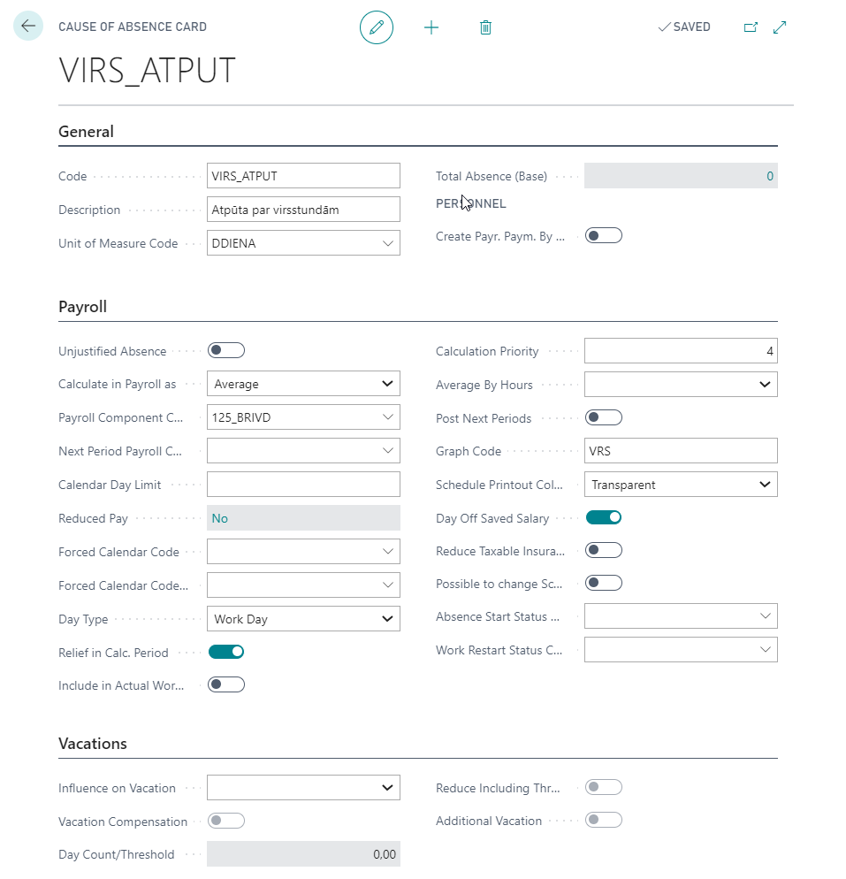
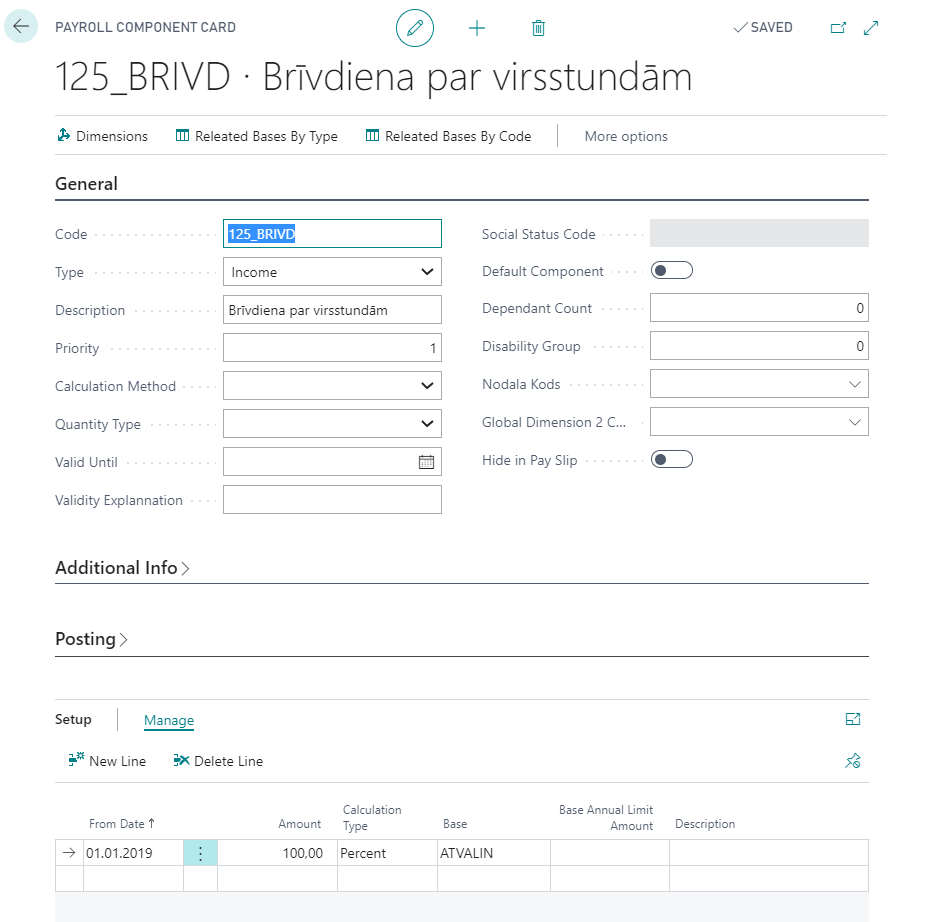
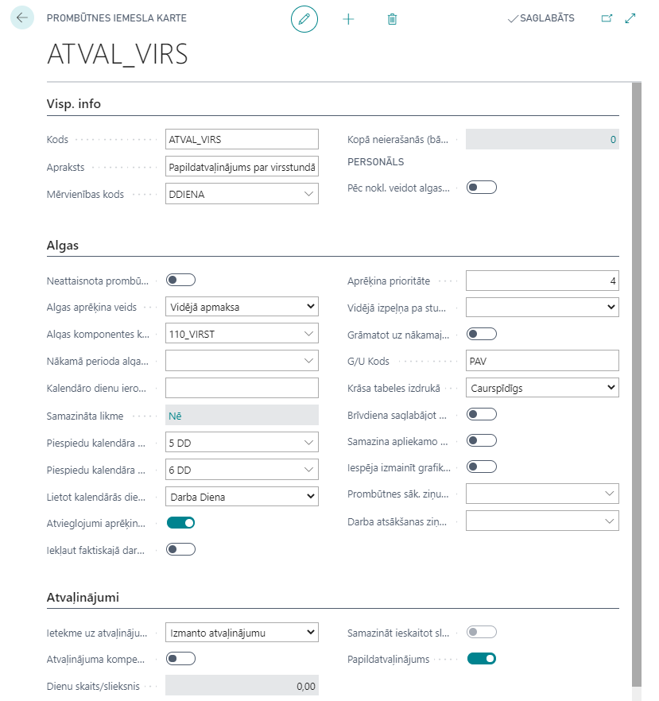

Overtime compensation with rest time
Setup
In order to be able to use this functionality, the following setup is required:
- Cause of Absence card and Payroll Component for rest time:


- Cause of Absence card and Payroll Component for additional vacation days


- In Overtime Setup is required to set the following fields:
- Default Usage Type - Pay Out, Day Off, Vacation Add.Day.
- Absence Code For DayOff Usage - set the code “VIRS_ATPUT”.
- Month Qty. For DayOff Usage - Indicates how many months ago need to look for available overtime, what will be used as Day Off.
- Hours Qty. For Day On Vacation - Number of overtime what can be transferred into one additional vacation day.
Registration of overtime
By using the function Calculate Overtime in the Accounting table, at the same time also entries to the Overtime Registration are added. In case if in Accounting's field Monthly Overtime value will be corrected to zero or the line with overtimes will be deleted, then also the corresponding record will be deleted from Overtime Registration.
Pay attention that in Accounting's field Monthly Overtime value will includes also those overtimes what will be postponed for the pay out from the previous months to the current month.
Overtime Registration is available from the Accounting's tool pane or by using system search. Overtime Registration includes following fields:
- Schedule Document No. - Schedule table No., where overtime is calculated.
- Employee No. - Number of employee.
- Usage Type - how the overtime will be reimbursed (Pay Out, Day Off, Vacation Add.Day). In case of overtime use divided into multiple variants (for example, pay out + day off, pay out + vacation add.day), then in this field will be stated the last usage type. To all entries will be added the default type, what is stated in Overtime Setup.
- Vacation Period No. - vacation period, where additional vacation day will be granted.
- Source Schedule Month - Related Accounting table's month.
- Source Schedule Year - Related Accounting table's year
- Schedule Employee Overtime - overtime count from related Accounting table.
- Usage Overtime - Overtime Usage (see chapter below) total entry value with filter on particular Accounting No. and employee No.
- Target Schedule Month - The month to which the remaining overtime is transferred.
- Target Schedule Year - Year, to which the remaining overtime is transferred.
- Moved Overtime - Overtime count, transferred to pay out to another month.
Overtime Pay Out
Salaries list performs overtime calculation only for employees, who in appropriate period for overtimes in Overtime Registration usage type is Pay Out. In the Salary List Number of overtime payable employee coincides with value in the Overtime Registration's field Remaining Overtime and with overtime value at month's Accounting table. Overtime Register includes following fields:
- Schedule Document No. - Accounting table No. , where these overtimes are calculated;
- Employee No. - Employee number;
- Usage Type - Pay Out, Day Off, Vacation Add.Day;
- Usage Overtime - overtime used;
- Accounting month / Accounting Year - Month/ Year of the involved Accounting table.
Overtime compensation with vacation additional days
If an employee wants current monthly overtime use in the future as a vacation days, then before the salary is calculated, in the Overtime Register field Usage Type must be changed to Vacation Add.Day. Use function Change Overtime Usage Type to change the usage type. In the functions filter must indicate the accounting document no. where the type must be changed.
Additional vacation days can be granted in the Overtime Registration table with the following sequence:
- for the line/ lines with the usage type Vacation Add.Day should be indicated the number of the employee's vacation period, where the entry for the additional vacation days should be created.
- in the tool pane press the buttons Actions - Generate Additional Vacation Days to create the additional days.
Entry for the additional vacation day can be canceled only with the function Cancel Generated Additional Vacation Days in the Overtime Registration.
After additional day generation will be automatically created:
- entry for the use of overtime;
- entry for the additional vacation day adding in the indicated vacation period.
After adding the additional vacation days, the personnel order for additional absences can be booked.
Overtime compensation with the day off
If an employee wants current month overtime use in the future as a day off, then before the salary is calculated, in the Overtime Register field Usage Type must be changed to Day Off.
Usage Type also can be changed with the function Change Overtime Usage Type. In the functions filter must indicate the accounting document no. where the type must be changed.
Overtime Usage Type can be corrected directly from the Accounting table by using the button Overtime Registration from the Sched./Account. Line ListPart tab section Employee.
Day Off can be granted via personnel order posting or absence card creating with the code of absence No. VIRS_ATPUT (described in overtime Setup chapter).
After posting the personnel order or registering an absence card, an entry is automatically created on the usage of overtime.
Payment for the day off will be calculated on the salary list, which coincides with in the absence specified calculation year and month.
Transferring the overtime to another period
It is possible to transfer the remaining overtime of one period to another period. Overtime transfer can be made with Overtime Registrations function Change Overtime Usage Type. In the functions filter must indicate the accounting document no. from where the overtime are transferred.
Before the overtime transfer, Accounting table must be created where the overtime will be transferred.
The result of transferring the overtime:
- Usage Type in the period, from where the overtimes were transferred, changed to the type what was indicated in the transfer function window;
- Remaining overtime over the period from which overtime was moved is 0;
- Overtime balance in the Accounting table will rise accordingly to the transferred overtime amount.
- The transfer overtimes indicates in the Overtime Registrations field Moved Overtime and Moved Overtime From.
Should keep in mind that transferred overtimes with the usage type Pay Out will be added to the Accounting' s month overtimes. We recommend to perform a overtime transfer in the last step (before calculating overtime), when the Accounting tab's data is correct and final.
In case the employee will be deleted from the Accounting table, the transferred overtime will be canceled - Overtime Registration data will be returned to the overtime balance, what was up to the transfer. In case of cancelling the of overtime transfer, then the Overtime Registration fields Payment Accounting Month and Payment Accounting Year must be left blank.